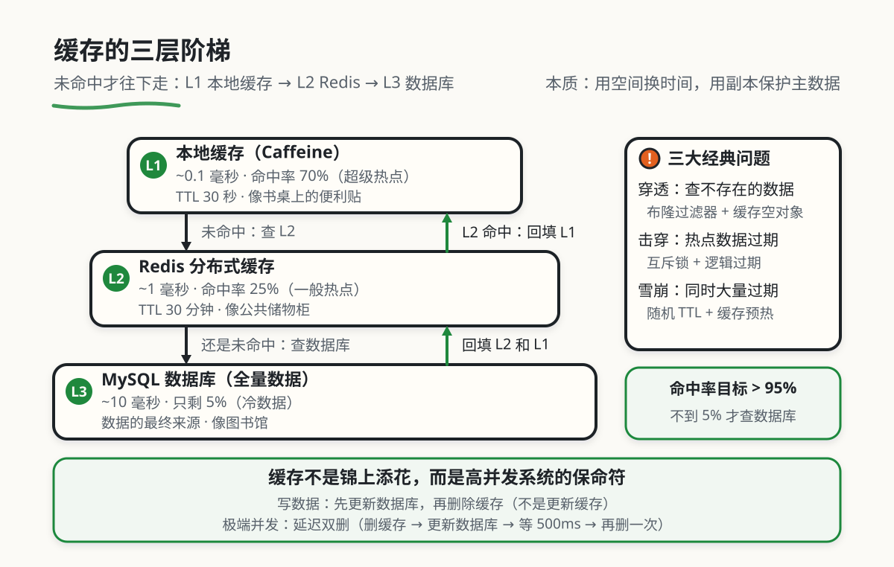

缓存的层次与策略
本章目录 · 1 节
交互入口：本章模拟器位于原课程页面，需联网打开。书中保留原理、代码与操作说明；按代码在本地练习时，先建独立的练习目录。
缓存原理与策略
核心问题 为什么有些网站打开只需 50 毫秒，而有些却要等 5 秒？ 这就像问：为什么从书包拿书只要 1 秒，而要去图书馆找书要 10 分钟？答案就是——缓存。本章将带你深入理解缓存的核心原理、设计模式和实战技巧，让你的系统性能提升 100 倍。
1. 缓存的动机
1.1 从"每次都查"到"记住常用数据"的演变
在计算机世界的早期，程序员每次需要数据时都会去硬盘或数据库查询。这就像你每次做数学题都要翻书查公式，虽然准确，但效率很低。随着系统规模增大，这种"每次都查"的方式开始暴露出严重的问题：数据库 CPU 飙升到 95%，响应时间从 100 毫秒暴涨到 8 秒，最终整个系统崩溃。
这就像一个学生每天上课都要从宿舍跑到图书馆查资料，一天跑 50 次，最后累瘫在半路。解决方案很简单：在书包里放一本常用公式手册，需要时直接翻书包，不用每次都跑图书馆。缓存就是计算机系统的"公式手册"，它把常用数据存储在快速访问的地方，让系统不用每次都去"图书馆"（数据库）。
🐌 没有缓存
- 每次请求都查数据库
- 数据库 CPU 使用率 95%
- 响应时间 5-8 秒
- 系统容易崩溃
有缓存
- 95% 请求直接返回
- 数据库 CPU 使用率 < 20%
- 响应时间 50 毫秒
- 系统稳定运行
这就是"缓存"要解决的核心问题：通过存储常用数据的副本，减少对慢速存储（数据库）的访问，让系统更快、更稳定。
1.2 案例：缓存是救命稻草
你可能会想："我的系统现在还行，为什么要提前设计缓存？"让我讲一个真实的故事，你就会明白为什么缓存是"必选项"。
阿强的数据库崩溃记 阿强是一个创业公司的全栈工程师，公司做了一个社交 App。早期用户少（几百人），系统运行正常，阿强觉得没必要搞缓存，直接查数据库就行。
半年后，用户增长到 10 万人，某天有个明星在 App 上发了一条动态，瞬间涌来 10 万用户访问。结果数据库直接撑爆了：CPU 100%，响应时间从 100ms 变成 30 秒，最后整个 App 崩溃，用户大量流失。
事后复盘：如果当时有一个简单的缓存层（比如 Redis），把热门动态缓存起来，数据库压力至少能降低 95%，系统完全能撑住这次流量洪峰。
阿强从此明白了一个道理：缓存是高并发系统的保命符。不加缓存，就像开车不系安全带——平时没事，出事就晚了。
核心启示 缓存的价值不只是"更快"，更重要的是"保护"。它保护数据库不被压垮，保护系统在高流量下依然稳定运行。当你设计系统时，不要等到出事才想起缓存，要从一开始就把它作为核心架构的一部分。
2. 核心概念：缓存定义
🤔 缓存到底是什么？ 简单来说，缓存就是数据副本的存储空间。就像你在书桌前贴了一张便利贴，记着常用电话号码，这样就不需要每次都翻手机通讯录。
三个关键点：
- 副本：缓存里的数据是原始数据（数据库）的副本，不是主数据
- 快速访问：缓存通常在内存中，读取速度比硬盘快 10 万倍
- 有限容量：缓存空间有限，只能存储最常用的数据
所以，缓存就是用空间换时间——牺牲一些内存空间，换取极快的数据访问速度。
在深入具体技术之前，我们需要先搞清楚几个核心概念。为了帮助你理解，我们用一个"学生的书包"来类比缓存系统。
2.1 用"书包比喻"理解缓存的核心概念
想象你是一个学生，每天需要查各种资料。这个过程和缓存系统惊人地相似：
| 概念 | 🎒 书包比喻 | 技术含义 | 真实例子 |
|---|---|---|---|
| 缓存命中 (Cache Hit) | 你要找的公式正好在便利贴上 | 请求的数据在缓存中找到 | 查询用户信息，Redis 中有，直接返回 |
| 缓存未命中 (Cache Miss) | 便利贴上没有，得翻书 | 请求的数据不在缓存中 | 查询用户信息，Redis 中没有，需要查数据库 |
| 命中率 (Hit Ratio) | 100 次查公式中，有 95 次在便利贴上 | 缓存命中的比例 | 命中率 95%，说明 95% 的请求不用查数据库 |
| TTL (Time To Live) | 便利贴写上"3 天后撕掉" | 缓存的过期时间 | 设置用户信息缓存 30 分钟后自动失效 |
| 淘汰 (Eviction) | 书包装满了，把最旧的一张便利贴扔掉 | 缓存满时删除旧数据 | Redis 内存满了，自动删除最少使用的数据 |
2.2 缓存命中 vs 缓存未命中
缓存命中和未命中的性能差异是巨大的。看具体的数据：
| 操作类型 | 响应时间 | 相对速度 | 适合场景 |
|---|---|---|---|
| CPU L1 缓存 | ~0.5 纳秒 | 极快（基准） | CPU 内部运算 |
| 内存读取 | ~100 纳秒 | 快 200 倍 | 本地缓存（如 Caffeine） |
| Redis 查询 | ~1 毫秒 | 慢 200 万倍 | 分布式缓存 |
| MySQL 查询 | ~10 毫秒 | 慢 2000 万倍 | 硬盘数据库查询 |
从表格中你能看到什么？ 性能差距触目惊心：内存操作比 MySQL 查询快 10 万倍！这就像从书桌拿书（1 秒）和去图书馆找书（10 万秒，约 28 小时）的差距。
三层性能阶梯：
- 本地缓存（内存）：最快，但容量小，适合热点数据
- Redis 缓存：中等速度，容量大，适合分布式场景
- 数据库：最慢，但容量无限，是数据的最终来源
实战启示：你的系统应该让 95% 以上的请求在缓存层就返回，只有不到 5% 的请求需要查数据库。这样数据库压力小，系统整体性能就会大幅提升。
看看一次"缓存命中"和"缓存未命中"的真实代码 用代码对比这两种情况：
// 场景：查询用户信息
// ===== 缓存命中 (Cache Hit) =====
// 1. 先查 Redis 缓存
const userFromCache = await redis.get('user:123')
if (userFromCache) {
// 命中！直接返回，耗时约 1 毫秒
return JSON.parse(userFromCache)
}
// ===== 缓存未命中 (Cache Miss) =====
// 2. 缓存没有，查数据库
const userFromDB = await db.query('SELECT * FROM users WHERE id = 123')
// 未命中！需要查数据库，耗时约 10 毫秒，慢了 10 倍
// 3. 查到后写入缓存，下次命中
await redis.set('user:123', JSON.stringify(userFromDB), 'EX', 1800)
return userFromDB
关键点：
- 缓存命中：1 毫秒返回，用户体验极佳
- 缓存未命中：10 毫秒返回，用户体验稍差
- 缓存的价值：把未命中变成命中，性能提升 10 倍
2.3 缓存的生命周期
一个缓存条目从创建到销毁，会经历完整的生命周期。理解这个过程对设计缓存系统很重要。
四个阶段：
阶段一：写入 (Write)
- 主动写入：系统启动时，预先把热点数据加载到缓存（缓存预热）
- 懒加载：首次访问时从数据库加载并写入缓存（最常用）
阶段二：命中/未命中 (Hit/Miss)
- 每次请求都会先查缓存
- 命中则直接返回，未命中则查数据库
阶段三：过期 (Expiration)
- TTL (Time To Live)：设置缓存存活时间（如 30 分钟）
- 到期后缓存自动失效，下次访问需要重新加载
阶段四：淘汰 (Eviction)
- 缓存空间有限，满了之后需要删除旧数据
- 常见淘汰策略：
- LRU (Least Recently Used)：删除最久没有被使用的数据（最常用）
- LFU (Least Frequently Used)：删除访问频率最低的数据
- FIFO (First In First Out)：删除最早写入的数据
👇 动手看看： 原课程的交互演示展示了缓存的生命周期。点击"新增缓存"，观察缓存如何经历写入、命中、过期、淘汰的全过程：
3. 缓存的演进之路：从单机到分布式
为什么需要不同类型的缓存？ 就像你学习时会在不同地方放资料：书桌上放最常用的（便利贴），书包里放常用的（笔记本），图书馆放所有资料（书库）。
缓存系统也一样：
- 本地缓存（书桌）：最快，容量小，放超级热点数据
- 分布式缓存（公共储物柜）：较快，容量大，放常用数据
- 数据库（图书馆）：最慢，容量无限，放所有数据
为什么要分层？ 因为不同层次的性能和成本不同，合理组合才能达到最优效果。

讲了这么多概念，看一个真实的案例：某电商系统是如何从"没有缓存"一步步进化到"多级缓存架构"的。通过这个案例，你会更直观地理解缓存设计的重要性。
3.1 阶段一：无缓存时代——数据库裸奔
背景：早期系统用户少（几百人），所有请求直接查数据库，没有任何缓存层。
技术栈：
- 数据库：MySQL
- 无缓存：没有 Redis，没有本地缓存
系统架构：
用户请求 → 应用服务器 → MySQL 数据库
这个阶段的特点：
- ✅ 优点：架构简单，开发快速
- ❌ 缺点：数据库压力大，性能差，用户量上千就崩
查看当时的代码和遇到的问题 代码示例（每次都查数据库）：
// 获取商品详情——每次都查数据库
async function getProduct(productId) {
// 直接查数据库，没有任何缓存
const product = await db.query(
'SELECT * FROM products WHERE id = ?',
[productId]
)
return product
}
遇到的问题：
- 数据库 CPU 飙升：每次请求都查数据库，CPU 使用率 80%+
- 响应慢：复杂查询要 50-100 毫秒，用户体验差
- 并发能力差：数据库 QPS（每秒查询数）上限只有 2000，再多就崩溃
- 热点商品问题：热门商品详情页被频繁查询，数据库成为瓶颈
当时的临时解决方案：
- 买更贵的服务器（加 CPU、内存）——成本高，效果有限
- 数据库读写分离 —— 能缓解读压力，但写压力依然存在
- SQL 优化 —— 能提升 20-30%，但无法解决根本问题
这种"裸奔"模式在用户量 < 1000 时还能应付，但随着用户增长到 1 万、10 万，数据库开始频繁崩溃，团队迫切需要引入缓存。
3.2 阶段二：引入 Redis 缓存——性能提升 10 倍
背景：用户增长到 1 万人，数据库撑不住了，团队决定引入 Redis 作为缓存层。
技术栈：
- 数据库：MySQL
- 缓存：Redis（单机版）
系统架构：
用户请求 → 应用服务器 → Redis 缓存（未命中才查） → MySQL 数据库
这个阶段的特点：
- ✅ 优点：性能提升 10 倍，数据库压力降低 90%
- ❌ 缺点：Redis 单点故障，缓存和数据库可能不一致
查看 Redis 缓存的实现代码 代码示例（增加 Redis 缓存）：
// 获取商品详情——先查 Redis，没有再查数据库
async function getProduct(productId) {
// 1. 先查 Redis 缓存
const cacheKey = `product:${productId}`
const cached = await redis.get(cacheKey)
if (cached) {
// 缓存命中！直接返回，约 1 毫秒
return JSON.parse(cached)
}
// 2. 缓存未命中，查数据库
const product = await db.query(
'SELECT * FROM products WHERE id = ?',
[productId]
)
// 3. 查到后写入 Redis，设置 30 分钟过期
await redis.setex(
cacheKey,
1800, // 30 分钟 = 1800 秒
JSON.stringify(product)
)
return product
}
性能提升对比：
| 场景 | 无缓存 | 有 Redis 缓存 | 提升倍数 |
|---|---|---|---|
| 普通商品查询 | 50ms | 5ms（缓存命中时） | 10 倍 |
| 热门商品查询 | 80ms | 1ms（命中率 95%） | 80 倍 |
| 数据库 QPS | 2000（满载） | 200（缓存拦截 90%） | 数据库压力降低 10 倍 |
| 系统最大并发 | 2000 用户 | 20000 用户 | 10 倍 |
带来的改善：
- 响应速度：缓存命中时，响应时间从 50ms 降到 1-5ms
- 并发能力：系统能支撑的用户量从 2000 提升到 20000
- 数据库压力：90% 的请求被 Redis 拦截，数据库 CPU 从 80% 降到 20%
- 用户体验：页面加载速度明显提升，用户投诉减少
新的挑战：
- 缓存一致性问题：商品价格变了，数据库更新了，但缓存还是旧的
- 缓存穿透：有人恶意查询不存在的商品 ID（如 id=-1），每次都穿透到数据库
- 缓存雪崩：系统重启后，所有缓存同时失效，瞬间大量请求打到数据库
- Redis 单点故障：Redis 宕机，所有请求直接打到数据库，系统可能崩溃
解决方案：
- 缓存一致性：更新数据库时，同步删除缓存
- 缓存穿透：对不存在的数据也在 Redis 中缓存（value 为空，TTL 设置短一些，如 5 分钟）
- 缓存雪崩：给缓存过期时间加随机值，避免同时失效
引入 Redis 后，系统性能大幅提升，但新问题也随之而来。团队开始研究如何解决这些缓存相关问题。
3.3 阶段三：多级缓存架构——性能再提升 5 倍
背景：用户增长到 10 万人，即使是 Redis 缓存也开始成为瓶颈（单机 Redis QPS 上限约 10 万），团队决定引入多级缓存。
技术栈：
- L1 缓存：应用本地缓存（Caffeine）
- L2 缓存：Redis 集群
- 数据库：MySQL 主从集群
系统架构：
用户请求 → CDN 缓存（静态资源） → 应用服务器
↓
L1: 本地缓存（Caffeine） → 未命中 → L2: Redis → 未命中 → MySQL
这个阶段的特点：
- ✅ 优点：极致性能（本地缓存只需 0.1 毫秒），高可用（Redis 宕机不影响热点数据）
- ❌ 缺点：架构复杂，多级缓存的一致性难以保证
查看多级缓存的实现代码 代码示例（本地缓存 + Redis 两级缓存）：
// 使用 Caffeine 本地缓存
const caffeine = require('caffeine')
const localCache = new caffeine.Cache({
max: 1000, // 最多缓存 1000 条
ttl: 30, // 30 秒过期
})
// 获取商品详情——两级缓存
async function getProduct(productId) {
const cacheKey = `product:${productId}`
// L1: 先查本地缓存（最快，约 0.1 毫秒）
const localCached = localCache.get(cacheKey)
if (localCached) {
console.log('L1 命中')
return localCached
}
// L2: 本地缓存未命中，查 Redis（较快，约 1 毫秒）
const redisCached = await redis.get(cacheKey)
if (redisCached) {
console.log('L2 命中，回填 L1')
const product = JSON.parse(redisCached)
// 回填本地缓存
localCache.set(cacheKey, product)
return product
}
// L3: Redis 也未命中，查数据库（最慢，约 10 毫秒）
console.log('L3 命中，回填 L2 和 L1')
const product = await db.query(
'SELECT * FROM products WHERE id = ?',
[productId]
)
// 回填 Redis（30 分钟过期）
await redis.setex(cacheKey, 1800, JSON.stringify(product))
// 回填本地缓存
localCache.set(cacheKey, product)
return product
}
多级缓存性能对比：
| 缓存层级 | 响应时间 | 命中率 | 适合存储的数据 |
|---|---|---|---|
| L1: 本地缓存 | ~0.1 毫秒 | 70%（超级热点） | 热门商品、系统配置、用户会话 |
| L2: Redis 缓存 | ~1 毫秒 | 25%（一般热点） | 大部分商品数据、评论聚合 |
| L3: 数据库 | ~10 毫秒 | 5%（冷数据） | 所有商品的全量数据 |
整体性能提升：
- 平均响应时间：5ms（阶段二） → 1ms（阶段三），再提升 5 倍
- 系统最大并发：2 万用户（阶段二） → 10 万用户（阶段三），提升 5 倍
- 数据库 QPS：200（阶段二） → 50（阶段三），再降低 4 倍
这个阶段解决的新问题：
- 本地缓存一致性：多个应用实例的本地缓存可能不一致（A 实例缓存了旧价格，B 实例是新价格）
- 解决：本地缓存 TTL 设置短一些（30 秒），让不一致的时间窗口变小
- 缓存预热：系统重启后，本地缓存是空的，大量请求会穿透到 Redis
- 解决：系统启动时，主动加载热点数据到本地缓存
多级缓存架构在大型互联网公司（如淘宝、京东）广泛应用，它能支撑百万级 QPS 的访问。
3.4 缓存架构演进全景图
| 阶段 | 架构 | 响应时间 | 最大并发 | 核心变化 |
|---|---|---|---|---|
| 阶段一：无缓存 | 应用 → 数据库 | 50ms | 2000 用户 | 数据库裸奔，性能差 |
| 阶段二：单级缓存 | 应用 → Redis → 数据库 | 5ms | 20000 用户 | 引入 Redis，性能提升 10 倍 |
| 阶段三：多级缓存 | 应用 → 本地缓存 → Redis → 数据库 | 1ms | 100000 用户 | 本地缓存 + Redis，性能再提升 5 倍 |
从表格中你能看到什么？ 阶段一 → 阶段二：质的飞跃。引入 Redis 后，性能提升 10 倍，数据库压力降低 90%。这是从"能用"到"够用"的关键一步。
阶段二 → 阶段三：极致优化。引入本地缓存后，性能再提升 5 倍。这是从"够用"到"极致"的进阶，适合超大流量场景。
实战建议：
- 用户量 < 1 万：阶段一（无缓存）够用，但建议引入 Redis（阶段二）
- 用户量 1-10 万：阶段二（Redis 缓存）是最佳选择
- 用户量 > 10 万：考虑阶段三（多级缓存），但要注意一致性复杂度
总结一下：缓存架构演进不只是"加更多缓存层"，而是根据流量规模选择合适的架构——过度设计会增加复杂度，设计不足会导致性能瓶颈。
4. 缓存的三大经典问题：穿透、击穿、雪崩
在实战中，缓存会引入三类经典问题。如果不了解它们，你的系统可能在某个时刻突然崩溃。用生活化的比喻理解这些问题。
4.1 缓存穿透：查询不存在数据
问题定义：查询一个不存在的数据（如 id=-1），缓存中没有（因为没有存过），数据库中也没有，导致每次请求都直接穿透到数据库。
用"查书"比喻缓存穿透 想象你在图书馆查一本书，你问管理员："有没有《不存在之书》？"
正常流程：
- 管理员查目录："没有这本书"
- 你离开
缓存穿透场景：
- 你第 1 次来问，管理员查数据库："没有"，告诉你
- 你第 2 次来问，管理员又查一遍数据库："没有"
- 你第 100 次来问，管理员还是查数据库："没有"
问题：管理员（数据库）被烦死了，每次都要查数据库，即使答案永远是"没有"。
解决：管理员记住"《不存在之书》不存在"，下次你问，直接说"没有"，不用查数据库。这就是缓存空对象。
真实场景：
- 恶意攻击者构造大量不存在的 ID 来查询（如 id=-1, id=999999999）
- 爬虫遍历不存在的资源路径（如 /api/products/invalid-id）
- 业务逻辑错误导致查询无效数据
解决方案 1：缓存空对象
async function getProduct(productId) {
const cacheKey = `product:${productId}`
// 1. 先查缓存
const cached = await redis.get(cacheKey)
if (cached !== null) {
// 注意：cached 可能是字符串 "null"
if (cached === 'null') {
// 缓存的是"空对象"，说明数据库中没有这个数据
return null
}
return JSON.parse(cached)
}
// 2. 查数据库
const product = await db.query(
'SELECT * FROM products WHERE id = ?',
[productId]
)
// 3. 即使数据库没有，也缓存"null"，TTL 设置短一些（如 5 分钟）
if (!product) {
await redis.setex(cacheKey, 300, 'null')
return null
}
// 4. 查到数据，正常缓存
await redis.setex(cacheKey, 1800, JSON.stringify(product))
return product
}
解决方案 2：布隆过滤器 (Bloom Filter)
布隆过滤器是一个"快速判断数据是否存在"的工具，它像一个"超级索引"：
布隆过滤器是什么？ 想象你有一个"神奇的黑盒"：
- 你问它："ID 为 123 的商品存在吗？"
- 它说："肯定不存在" → 那就真不存在，不用查数据库
- 它说："可能存在" → 那就去查数据库确认
特点：
- 绝对不会漏判：如果它说不存在，那就真不存在
- 可能误判：如果它说可能存在，有可能实际不存在（概率很低，可调）
价值：布隆过滤器能在查缓存之前，就把 99% 的"不存在"请求拦截掉，保护数据库。
// 使用布隆过滤器
const { BloomFilter } = require('bloom-filters')
// 初始化布隆过滤器（假设最多有 100 万个商品 ID）
const bloomFilter = new BloomFilter(1000000, 0.01) // 误判率 1%
// 系统启动时，把所有商品 ID 加入布隆过滤器
async function initBloomFilter() {
const allIds = await db.query('SELECT id FROM products')
allIds.forEach(row => {
bloomFilter.add(row.id)
})
}
// 查询商品前，先用布隆过滤器判断
async function getProduct(productId) {
// 1. 先用布隆过滤器判断
if (!bloomFilter.has(productId)) {
// 肯定不存在，直接返回 null，不用查数据库
console.log('布隆过滤器拦截：商品不存在')
return null
}
// 2. 布隆过滤器说"可能存在"，查缓存
const cached = await redis.get(`product:${productId}`)
if (cached) {
return JSON.parse(cached)
}
// 3. 缓存未命中，查数据库
const product = await db.query(
'SELECT * FROM products WHERE id = ?',
[productId]
)
if (!product) {
// 布隆过滤器误判（概率很低），实际不存在
await redis.setex(`product:${productId}`, 300, 'null')
return null
}
// 4. 查到数据，写入缓存
await redis.setex(`product:${productId}`, 1800, JSON.stringify(product))
return product
}
4.2 缓存击穿：热点数据过期
问题定义：某个热点数据（如热门商品、热搜新闻）在缓存中过期（TTL 到期），此时大量并发请求同时到达，都去查询数据库，导致数据库压力骤增。
用"抢书"比喻缓存击穿 想象图书馆有本《哈利波特》，超热门，100 个人都想借。
正常情况：
- 图书馆把《哈利波特》放在"借阅台"（缓存）
- 大家直接从借阅台拿，不用去书架找
缓存击穿场景：
- 借阅台的《哈利波特》到期了（被还回书架）
- 100 个人同时来借，发现借阅台没有
- 100 个人都冲去书架找（数据库）
- 书架管理员（数据库）被挤爆了
问题：不是"不存在的书"，而是"超热门的书"突然从缓存消失了，导致瞬间大量请求打到数据库。
真实场景：
- 微博热搜榜过期瞬间，几万人同时访问
- 明星八卦新闻缓存失效，粉丝疯狂访问
- 秒杀活动开始时的库存数据过期
解决方案 1：互斥锁 (Mutex Lock)
async function getProduct(productId) {
const cacheKey = `product:${productId}`
// 1. 先查缓存
const cached = await redis.get(cacheKey)
if (cached) {
return JSON.parse(cached)
}
// 2. 缓存未命中，获取分布式锁
const lockKey = `lock:${productId}`
const lock = await redis.set(lockKey, '1', 'NX', 'EX', 10) // 锁 10 秒
if (lock === 'OK') {
// 3. 获取到锁，查数据库
console.log('获取锁成功，查询数据库')
const product = await db.query(
'SELECT * FROM products WHERE id = ?',
[productId]
)
// 4. 写入缓存
await redis.setex(cacheKey, 1800, JSON.stringify(product))
// 5. 释放锁
await redis.del(lockKey)
return product
} else {
// 6. 没获取到锁，等待 50ms 后重试
console.log('获取锁失败，等待后重试')
await new Promise(resolve => setTimeout(resolve, 50))
return getProduct(productId) // 递归重试
}
}
解决方案 2：逻辑过期 (Logical Expiration)
async function getProduct(productId) {
const cacheKey = `product:${productId}`
// 1. 查缓存
const cached = await redis.get(cacheKey)
if (cached) {
const data = JSON.parse(cached)
// 2. 检查逻辑过期时间
if (Date.now() < data.expireTime) {
// 未过期，直接返回
return data.product
} else {
// 3. 逻辑过期，异步重建缓存，同时返回旧数据
console.log('逻辑过期，异步重建缓存')
rebuildCacheAsync(productId) // 异步重建
return data.product // 返回旧数据
}
}
// 4. 缓存不存在（首次加载），同步查数据库
const product = await db.query(
'SELECT * FROM products WHERE id = ?',
[productId]
)
// 5. 写入缓存（包含逻辑过期时间）
const cacheData = {
product: product,
expireTime: Date.now() + 30 * 60 * 1000 // 30 分钟后逻辑过期
}
await redis.set(cacheKey, JSON.stringify(cacheData))
return product
}
// 异步重建缓存
async function rebuildCacheAsync(productId) {
const lockKey = `rebuild:${productId}`
const lock = await redis.set(lockKey, '1', 'NX', 'EX', 10)
if (lock === 'OK') {
console.log('异步重建缓存开始')
const product = await db.query(
'SELECT * FROM products WHERE id = ?',
[productId]
)
const cacheData = {
product: product,
expireTime: Date.now() + 30 * 60 * 1000
}
await redis.set(`product:${productId}`, JSON.stringify(cacheData))
await redis.del(lockKey)
console.log('异步重建缓存完成')
}
}
4.3 缓存雪崩：大量数据同时过期
问题定义：大量缓存数据在同一时间点集中过期（或 Redis 宕机），导致所有请求同时穿透到数据库，瞬间压垮数据库。
用"图书馆批量还书"比喻缓存雪崩 想象图书馆的"借阅台"（缓存）有 1000 本书。
正常情况：
- 这些书的还书时间是分散的：有的今天还，有的明天还，有的后天还
- 每天只有几十本书到期，管理员（数据库）能轻松处理
缓存雪崩场景：
- 系统重启后，管理员把 1000 本书都设置"30 天后到期"
- 30 天后，这 1000 本书同时到期
- 1000 个人同时来借书，发现借阅台没有
- 1000 个人都冲去书架找
- 书架管理员（数据库）瞬间被挤爆
问题：不是一本书的问题，而是大量数据同时过期，导致数据库瞬间压力暴增。
真实场景：
- 系统重启后，所有缓存从 0 开始重建，同时设置相同 TTL（如 30 分钟）
- 定时任务批量刷新缓存，设置相同的过期时间
- 缓存服务（Redis）宕机或网络分区
解决方案 1：随机 TTL
async function getProduct(productId) {
const cacheKey = `product:${productId}`
const cached = await redis.get(cacheKey)
if (cached) {
return JSON.parse(cached)
}
const product = await db.query(
'SELECT * FROM products WHERE id = ?',
[productId]
)
// 关键：在基础 TTL（30 分钟）上加随机值（±5 分钟）
const baseTTL = 1800 // 30 分钟
const randomOffset = Math.floor(Math.random() * 600) - 300 // -5 到 +5 分钟
const finalTTL = baseTTL + randomOffset
console.log(`缓存 TTL: ${finalTTL} 秒（${Math.floor(finalTTL / 60)} 分钟）`)
await redis.setex(cacheKey, finalTTL, JSON.stringify(product))
return product
}
解决方案 2：缓存预热 (Cache Preheating)
// 系统启动时，主动加载热点数据到缓存
async function cacheWarmup() {
console.log('开始缓存预热...')
// 1. 查询最热门的 1000 个商品（根据访问量排序）
const hotProducts = await db.query(`
SELECT * FROM products
ORDER BY view_count DESC
LIMIT 1000
`)
// 2. 批量写入 Redis
for (const product of hotProducts) {
const cacheKey = `product:${product.id}`
const ttl = 1800 + Math.floor(Math.random() * 600) // 30 分钟 ± 5 分钟
await redis.setex(cacheKey, ttl, JSON.stringify(product))
}
console.log(`缓存预热完成，已加载 ${hotProducts.length} 个热门商品`)
}
// 应用启动时执行
cacheWarmup()
解决方案 3：熔断降级 (Circuit Breaker)
// 使用熔断器保护数据库
const CircuitBreaker = require('opossum')
// 设置熔断器
const dbQueryBreaker = new CircuitBreaker(
async (productId) => {
return await db.query('SELECT * FROM products WHERE id = ?', [productId])
},
{
timeout: 3000, // 3 秒超时
errorThresholdPercentage: 50, // 错误率超过 50% 时熔断
resetTimeout: 30000 // 30 秒后尝试恢复
}
)
// 熔断后的降级处理
dbQueryBreaker.fallback(() => {
console.log('数据库熔断，返回降级数据')
return {
id: productId,
name: '服务繁忙，请稍后重试',
status: 'degraded'
}
})
async function getProduct(productId) {
const cacheKey = `product:${productId}`
const cached = await redis.get(cacheKey)
if (cached) {
return JSON.parse(cached)
}
// 通过熔断器查数据库
const product = await dbQueryBreaker.fire(productId)
if (product.status === 'degraded') {
return product // 返回降级数据
}
await redis.setex(cacheKey, 1800, JSON.stringify(product))
return product
}
👇 动手看看： 原课程的交互演示对比了缓存穿透、击穿、雪崩三种问题的场景和解决方案：
5. 让缓存和数据库保持同步的实现
缓存的本质是数据的副本，副本和原始数据（数据库）之间必然存在不一致的时间窗口。如何控制这个时间窗口，是缓存设计的核心挑战。
5.1 缓存和数据库会不一致的必要性
用"便利贴和书"比喻不一致 想象你在便利贴上记着："小明电话：123456"，这是你通讯录（数据库）的副本。
不一致的场景：
- 你更新通讯录，把小明电话改成 "7654321"
- 但你忘记更新便利贴
- 下次你查电话，看便利贴，还是旧的 "123456"
问题：便利贴（缓存）和通讯录（数据库）不一致了。
原因：更新了原始数据，但没有同步更新副本。在计算机系统中，这是因为"更新数据库"和"更新缓存"是两个独立的操作，中间有时间窗口，可能被其他操作打乱。
真实的并发场景：
| 时间 | 线程 A（更新用户年龄） | 线程 B（查询用户） | 数据库 | 缓存 |
|---|---|---|---|---|
| T1 | 开始更新数据库 | - | age=20 | age=20 |
| T2 | 数据库更新为 age=25 | 查询缓存，命中 age=20 | age=25 | age=20 ❌ |
| T3 | 删除缓存 | - | age=25 | - |
| T4 | - | - | age=25 | 从 DB 加载 age=25 ✅ |
问题：在 T2 时刻，线程 B 读到了缓存中的旧值 20，而数据库已经是 25。这就是缓存不一致。
5.2 最佳实践：先更新数据库，再删除缓存
为什么是"删除"而不是"更新"缓存？ 你可能会想：为什么不直接"更新缓存"，而是"删除缓存"？
更新缓存的问题：
- 并发更新时，可能出现 A 线程先更新缓存，B 线程后更新数据库但缓存没更新
- 更新缓存的成本可能很高（比如需要聚合多个表的数据）
- 如果更新后数据又被删除了，白费力气
删除缓存的优势：
- 下次查询时自动从数据库加载最新数据（懒加载）
- 避免并发更新导致的脏数据
- 简单可靠，是业界最佳实践
标准流程：
// 更新商品信息
async function updateProduct(productId, updateData) {
// 1. 先更新数据库
await db.query(
'UPDATE products SET name = ?, price = ? WHERE id = ?',
[updateData.name, updateData.price, productId]
)
// 2. 再删除缓存（不是更新缓存！）
await redis.del(`product:${productId}`)
// 3. 下次查询时，缓存未命中，自动从数据库加载最新数据
console.log('更新完成，缓存已删除')
}
查看为什么"先更新 DB，再删缓存"是最优方案 对比三种更新策略：
策略 1：先更新缓存，再更新数据库 ❌ 不推荐
// 问题：如果更新数据库失败，缓存是新值，数据库是旧值，不一致
await redis.set('product:1', newProduct) // 缓存更新成功
await db.query('UPDATE products SET ...') // 数据库更新失败！
// 结果：缓存是新值，数据库是旧值，永久不一致！
策略 2：先删除缓存，再更新数据库 ❌ 不推荐
// 问题：删除和更新之间，有其他线程查询，会加载旧数据到缓存
await redis.del('product:1') // 缓存删除
// 此时线程 B 来查询，发现缓存没有，查数据库（还是旧值），写入缓存
await db.query('UPDATE products SET ...') // 更新数据库
// 结果：缓存是旧值，数据库是新值，不一致！
策略 3：先更新数据库，再删除缓存 ✅ 推荐
// 优点：数据库更新时加行锁，其他线程必须等待，避免脏数据
await db.query('UPDATE products SET ...') // 更新数据库（加行锁）
await redis.del('product:1') // 删除缓存
// 即使删除缓存失败，只是下次查询会回源，不会导致脏数据长期存在
为什么策略 3 最优？
- 数据库锁保护：更新操作会获取行锁，其他读写操作必须等待
- 删除失败影响小：即使删除缓存失败，只是下次读取会回源，不会导致脏数据
- 简单可靠：不需要额外的复杂逻辑
5.3 延迟双删：极端场景的一致性保障
场景：在高并发场景下，即使是"先更新 DB，再删缓存"，仍有极小概率出现不一致。延迟双删通过两次删除，最大限度保证一致性。
流程：
1. 删除缓存
2. 更新数据库
3. 等待一段时间（如 500ms）
4. 再次删除缓存
async function updateProduct(productId, updateData) {
const cacheKey = `product:${productId}`
// 1. 第一次删除缓存
await redis.del(cacheKey)
// 2. 更新数据库
await db.query(
'UPDATE products SET name = ?, price = ? WHERE id = ?',
[updateData.name, updateData.price, productId]
)
// 3. 等待 500ms（让其他线程的查询完成）
await new Promise(resolve => setTimeout(resolve, 500))
// 4. 第二次删除缓存（删除可能被其他线程加载的旧数据）
await redis.del(cacheKey)
console.log('延迟双删完成，数据已同步')
}
三种一致性策略对比：
| 策略 | 一致性级别 | 性能影响 | 复杂度 | 适用场景 |
|---|---|---|---|---|
| 先更新 DB，再删缓存 | 最终一致（不一致窗口 < 100ms） | 低 | 低 | 大多数场景，推荐作为默认方案 |
| 延迟双删 | 强最终一致（不一致窗口 < 10ms） | 中（延迟 500ms） | 中 | 对一致性要求较高的场景（如金融、库存） |
| 先删缓存，再更新 DB | 弱（不一致窗口大） | 低 | 低 | ❌ 不推荐，易出现不一致 |
👇 动手看看： 原课程的交互演示对比了三种一致性策略的效果。点击"更新数据"，观察缓存和数据库的一致性变化：
6. 实战：构建一个完整的缓存系统
讲了这么多原理，看一个真实案例：如何为一个电商商品详情页设计完整的缓存系统。
6.1 业务场景分析
需求：用户访问商品详情页，需要展示商品基础信息、价格、库存、评价等数据。
特点：
- 读多写少：100 次查询，1 次更新（读写比 100:1）
- 热点集中：20% 的商品贡献 80% 的流量
- 数据复杂：商品基础信息 + 价格 + 库存 + 评价聚合
- 一致性要求：价格、库存强一致，其他可最终一致
性能指标：
- P99 响应时间 < 100ms（99% 的请求在 100ms 内返回）
- 数据库 QPS 峰值 < 5000
- 缓存命中率 > 95%
6.2 架构设计
多级缓存架构：
用户请求
↓
CDN 缓存（静态资源：图片、CSS、JS）
↓ 未命中
Nginx 本地缓存（商品基础信息聚合）
↓ 未命中
应用服务器
↓
├─ L1: 本地缓存（Caffeine，热点商品）
│ ↓ 未命中
├─ L2: Redis 缓存（所有商品数据）
│ ↓ 未命中
└─ L3: MySQL 数据库（全量数据）
6.3 核心代码实现
完整的多级缓存实现（简化版）：
const caffeine = require('caffeine')
// L1: 本地缓存（30 秒过期）
const localCache = new caffeine.Cache({
max: 1000,
ttl: 30,
})
// 获取商品详情（多级缓存）
async function getProduct(productId) {
const cacheKey = `product:${productId}`
// L1: 本地缓存（约 0.1 毫秒）
const localCached = localCache.get(cacheKey)
if (localCached) {
console.log('L1 命中')
return localCached
}
// L2: Redis 缓存（约 1 毫秒）
const redisCached = await redis.get(cacheKey)
if (redisCached) {
console.log('L2 命中，回填 L1')
const product = JSON.parse(redisCached)
localCache.set(cacheKey, product)
return product
}
// L3: 数据库（约 10 毫秒，带分布式锁防击穿）
const lockKey = `lock:${productId}`
const lock = await redis.set(lockKey, '1', 'NX', 'EX', 10)
if (lock === 'OK') {
console.log('L3 命中，查询数据库')
const product = await db.query(
'SELECT * FROM products WHERE id = ?',
[productId]
)
if (product) {
// 写入 Redis（30 分钟 + 随机 TTL）
const ttl = 1800 + Math.floor(Math.random() * 600) - 300
await redis.setex(cacheKey, ttl, JSON.stringify(product))
// 回填本地缓存
localCache.set(cacheKey, product)
}
await redis.del(lockKey)
return product
} else {
// 获取锁失败，等待后重试
await new Promise(resolve => setTimeout(resolve, 50))
return getProduct(productId)
}
}
// 更新商品信息（先更新 DB，再删除缓存）
async function updateProduct(productId, updateData) {
const cacheKey = `product:${productId}`
// 1. 更新数据库
await db.query(
'UPDATE products SET name = ?, price = ? WHERE id = ?',
[updateData.name, updateData.price, productId]
)
// 2. 删除本地缓存
localCache.del(cacheKey)
// 3. 删除 Redis 缓存
await redis.del(cacheKey)
console.log('更新完成，缓存已删除')
}
👇 动手看看： 原课程的交互演示展示了多级缓存系统的完整工作流程。点击"查询商品"，观察请求如何在各级缓存中流转：
7. 总结与学习路径
7.1 核心知识点回顾
| 知识点 | 一句话解释 | 解决的问题 | 实战要点 |
|---|---|---|---|
| 缓存命中 | 数据在缓存中找到 | 性能提升 10-100 倍 | 命中率目标 > 95% |
| 缓存穿透 | 查询不存在数据，每次都查数据库 | 数据库被恶意查询拖垮 | 布隆过滤器 + 缓存空对象 |
| 缓存击穿 | 热点数据过期，大量请求打到数据库 | 数据库瞬间压力暴增 | 互斥锁 + 逻辑过期 |
| 缓存雪崩 | 大量数据同时过期 | 数据库被压垮 | 随机 TTL + 缓存预热 |
| 多级缓存 | 本地缓存 + Redis + 数据库 | 性能极致优化 | L1 本地缓存命中率 70%，L2 Redis 命中率 25% |
| 缓存一致性 | 缓存和数据库同步 | 数据准确性 | 先更新 DB，再删除缓存 |
| 延迟双删 | 更新前后各删除一次缓存 | 极端场景的一致性 | 等待 500ms 后再删除 |
7.2 学习路径建议
阶段 1：理解原理（1-2 天）
- 掌握缓存的本质（数据副本，用空间换时间）
- 理解缓存命中率、TTL、淘汰等核心概念
- 了解不同存储介质的性能差异（内存 vs 硬盘）
阶段 2：掌握基础（2-3 天）
- 学会使用 Redis 做缓存（SET、GET、SETEX 命令）
- 实现简单的缓存读写逻辑（先查缓存，未命中再查数据库）
- 理解为什么"更新时删除缓存而不是更新缓存"
阶段 3：解决经典问题（1 周）
- 解决缓存穿透：实现布隆过滤器或缓存空对象
- 解决缓存击穿：实现互斥锁或逻辑过期
- 解决缓存雪崩：实现随机 TTL 和缓存预热
阶段 4：多级缓存（1-2 周）
- 引入本地缓存（Caffeine/Guava）
- 设计本地缓存 + Redis 的两级架构
- 处理多级缓存的一致性问题
阶段 5：生产级实战（持续）
- 设计完整的商品详情页缓存系统
- 搭建监控（缓存命中率、响应时间）
- 压测验证和性能调优
写在最后 缓存是高并发系统的基石。从淘宝的商品详情页到微博的热搜榜，从微信的朋友圈到抖音的视频流，所有高性能系统背后都有一套精心设计的缓存架构。
理解缓存，不只是学会一个技术，更是理解用空间换时间、用副本保护主数据的架构思想。当你真正掌握缓存，你的系统性能将从"能用"跨越到"好用"，最终达到"极致"。
对缓存系统建立起完整认知之后，实际项目中遇到性能问题，你就能想到："是否可以用缓存来解决？"